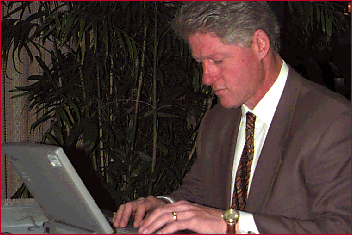
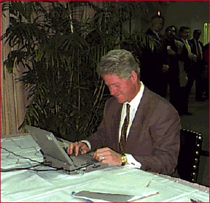

RealAudio [14.4 | 28.8]
President Clinton sent us the following e-mail from Atlanta —
TO: All Americans FROM: President Bill Clinton SUBJECT: NetDay '96 DATE: October 26, 1996 Today is NetDay in 18 states across the country. I want to thank the tens of thousands of parents, businesspeople, students and teachers who are volunteering their time and money to connect schools and classrooms to the Internet. Last March, Vice President Gore and I joined in the first NetDay, when one-fifth of California�s schools were connected to the Net on one day. This mission is critical, if we are to offer opportunity to all our young people. In my State of the Union Address, I challenged Americans to connect every classroom and library in America to the Information Superhighway by the year 2000, with trained teachers and top quality educational software. NetDay is an exciting response to that challenge. And this spring I proposed a $2 billion Technology Literacy Challenge, and I'm pleased that Congress has responded by allocating more than $200 million for our first year alone.
The Internet is transforming our lives — serving as our new town square, changing the way we live, the way we work, and the way we learn. We are using it to help families protect their health; we are finding cures for diseases by posting the map of human genes; we are using it to track deadbeat parents; we are making our government more accessible to the public. We must continue to unlock its potential. I believe that libraries and schools should be given free basic connections to the Internet, so that every student and every adult will have free access to the wealth of knowledge it holds. And last month, I proposed a $100 million commitment to improve and expand the Internet — to create the next generation of the Net.
I encourage all of you to join in this electronic "barnraising". NetDay is just the first step — Let's make 1997 NetYear.
Bill Clinton

Photos courtesy Linda Erhard, Multimedia Communications, Emory University
Audio courtesy Jim Kruse, Computing Resource Services, Emory University

Paid for by Clinton/Gore ’96 General Committee, Inc.